Fukuimihama, Fukui: things to do, food and stays
Fukuimihama · Fukui
Fukuimihama
Highlighted on the Fukui map.
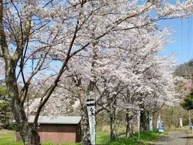
Stay
かつみや KATSUMIYA
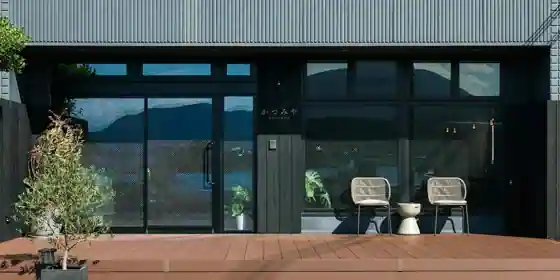
Katsumiya KATSUMIYA
ビジネスホテル西郷
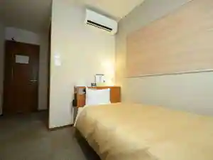
Business Hotel Saigo
Hotel in Matsubara, Fukuimihama with business travelers and lakeside location.
グランツ
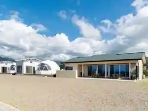
Gurantsu
民宿いそや
Minshuku Isoya
若狭美浜温泉 悠久乃碧 ホテル湾彩

Wakasa Mihama Onsen Yukyu No Heki Hotel Wan Sai
Hotel at Wakasamihama Onsen in Hisabisakokaigan, Fukuimihama.
ザ グラン リゾート三方五湖
Za Guran Resort Mikata Go Mizumi
Resort hotel in Hayase, Fukuimihama with scenic views and local seafood dinners.
旅館たなべ
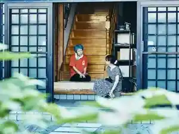
Ryokan Tanabe
漁場の宿 はっとり
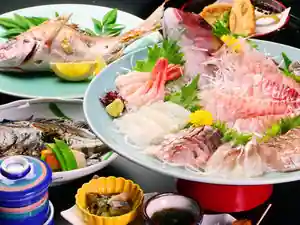
Gyojo No Yado Hattori
ホテル WAN STORY
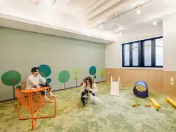
Hotel WAN STORY
Hotel in Sada, Fukuimihama with pet-friendly rooms and family-friendly stays.
Dining
うなぎ美浜
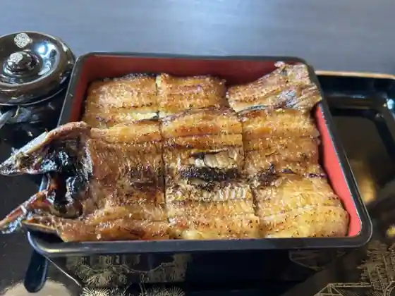
Unagi Mihama
メシヤ ハマビ
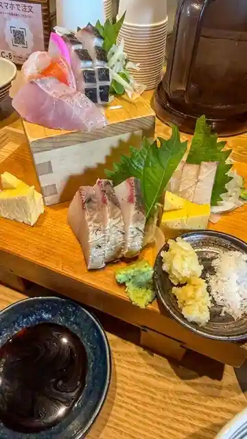
Meshiya Hamabi
活魚料理 味一休
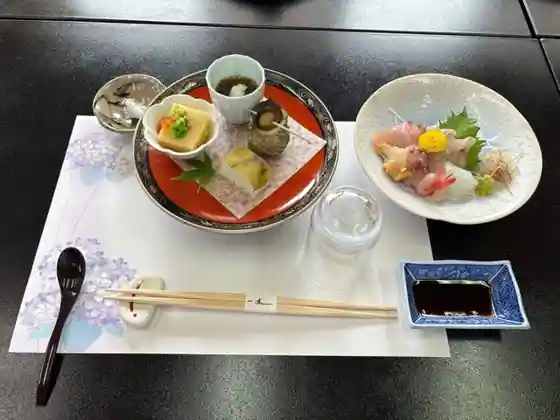
Ikeuo Ryori Aji Ikkyu
レストラン＆カフェ レインボー
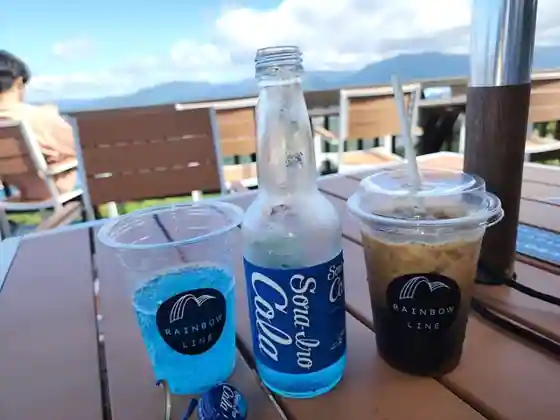
Restaurant & Cafe Reinbo
Mahana Table
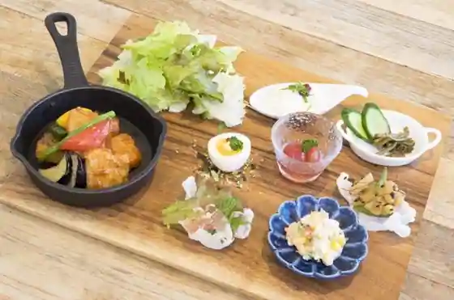
Mahana Table
はまカフェ
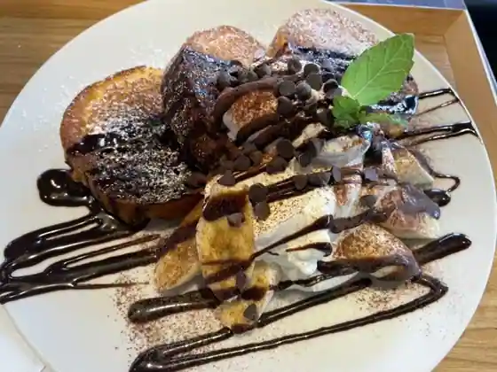
Hama Cafe
おとり
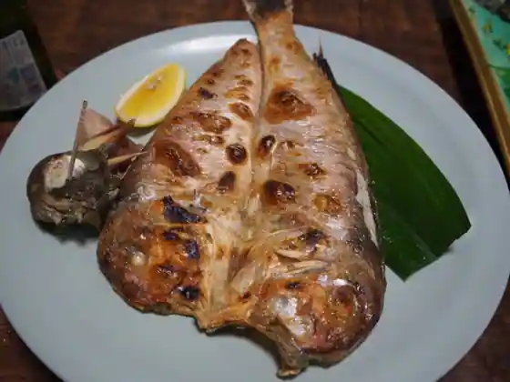
Otori
中谷鮮魚店
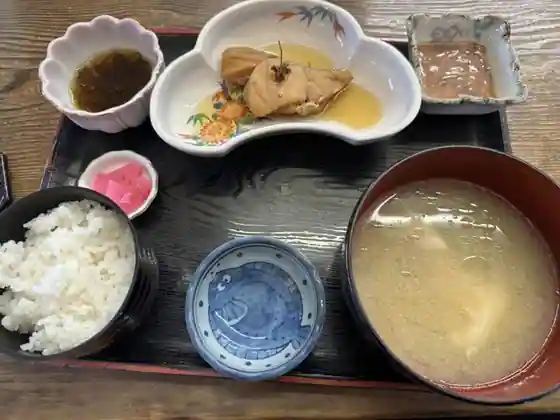
Nakatani Sengyo
ブリック ハウス
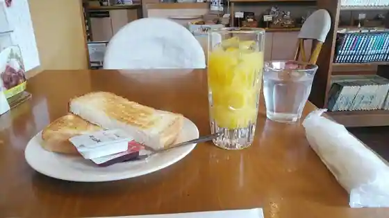
Brick House
Pizzeria&Cafe WAKUWAKU
Pizzeria&Cafe WAKUWAKU
青会食堂
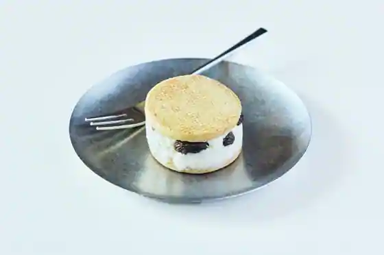
Ao Kai Shokudo
美浜食堂
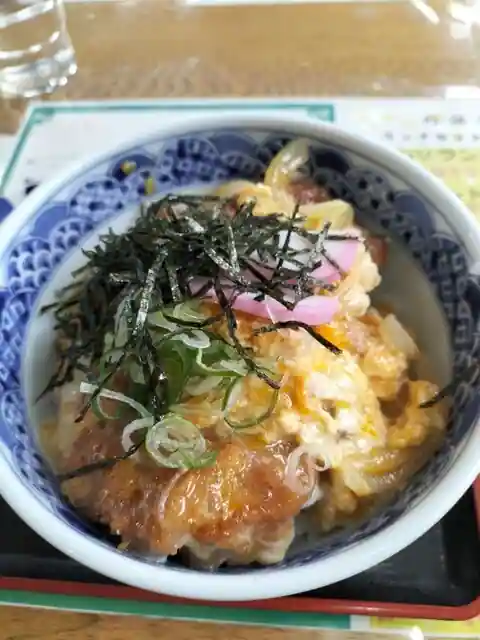
Mihama Shokudo
九十百千 食堂
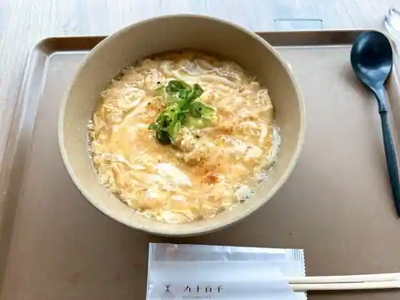
Kyuju Hyakusen Shokudo
Cafe NEU
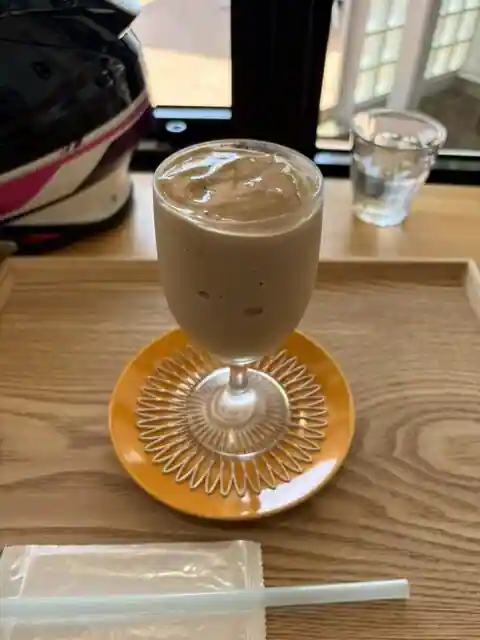
Cafe NEU
中道源蔵茶舗
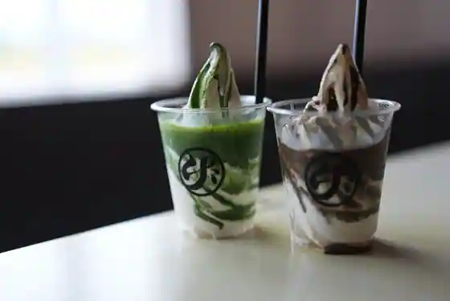
Chudo Genzo Chaho
五湖の駅
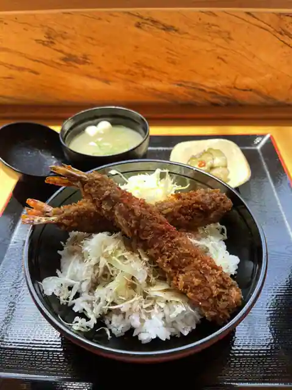
Go Mizumi No Eki
中華私房菜館 禄縁
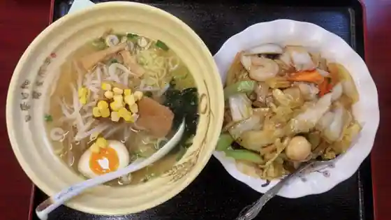
Chuka Watashi Bo Saikan Roku Heri
喫茶オーロラ
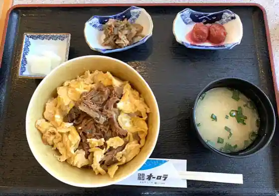
Kissa Orora
カフェミロク
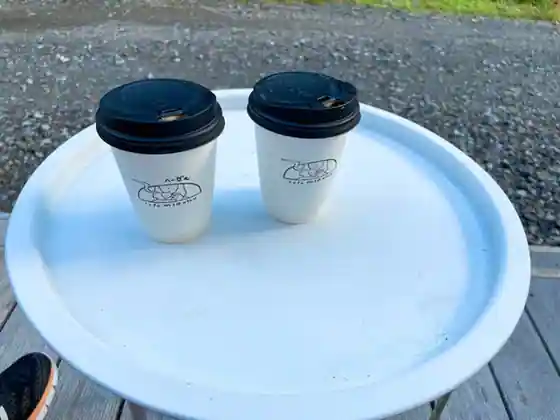
Cafe Miroku
お食事処 壱
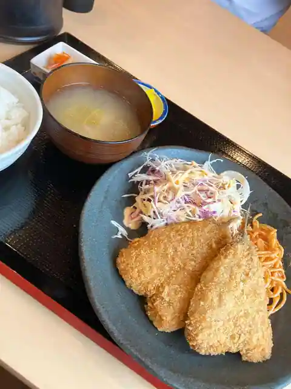
O Shokuji Tokoro Ichi
Sights
Reimbo Line Sancho Park Mikata Go Mizumi Ni Uka Bu Tenku no Terasu
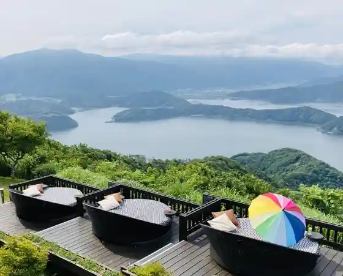
Mikata Go Mizumi

Suisho Hama Beach
Fisshingu Land Hyuga
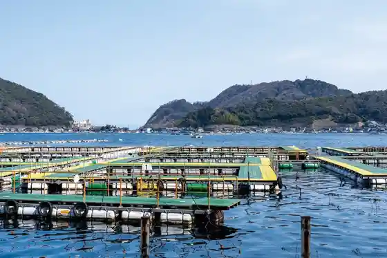
Shii Park Tanjo
Hiruga Kaijo Tsuribori
Daiya Hama Beach
Roadside Station (Wakasa Fukuimihama Hamabiyori)
Shinjo Keiryu Village
Rentasaikuru - Fukuimihama − Wakasa Fukuimihama Tourism Association (JR Fukuimihama Ekinai)
Fukuiken Engei Taiken Shisetsu Engei LABO no Oka
Fukuimihama Genshiryoku PR Center
Tanjo Shirahama Campground
Fisshingureimbo
Fukuimihama Enerugii Kankyo Kyoiku Taiken Kan Kiipasu
Zuirin Tera no Ippon Sakura
Kyuju Hyakusen
Hisabisa Ko Beach
Tanjo Oto Campground
Hayase Beach
Takenami Beach
Sugahama Beach
Tanjo Shirahama Beach
Fukuimihama Hatofuru Asa City Oishii Nature, Hatofuru Fukuimihama
Suisei Tera
Jun Hanshi Yashikiato
Wakasa Kuniyoshi Shiro History Museum
Byobugataki
Fukuimihama Rekishi Bunka Kan
Fukuimihama Town Hall